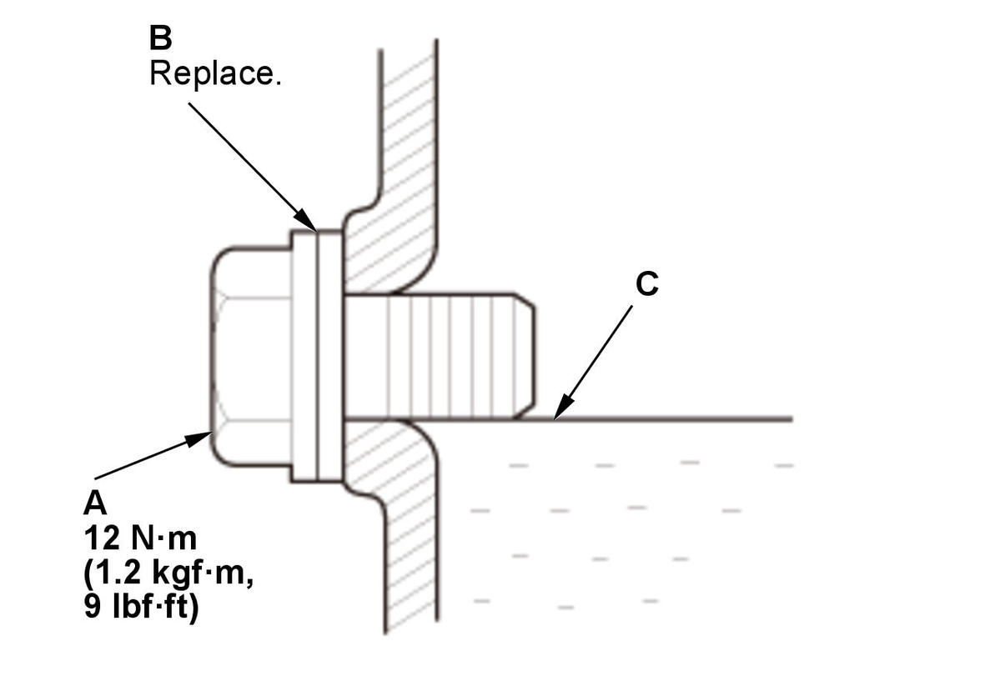

MTF Inspection and Replacement (Except K20C1 (M/T)): Inspection
WARNING: This page is about a different variant/trim than selected.
- Vehicle - Lift
- Engine Undercover Plate - Remove
- MTF - Check

Courtesy of HONDA, U.S.A., INC.1. Remove the oil check bolt (A) and the 6 mm sealing washer (B). 2. Check the condition of the MTF and make sure it is at the proper level (C).
NOTE: If the MTF is dirty, replace the MTF.
3. Install the oil check bolt with a new 6 mm sealing washer.